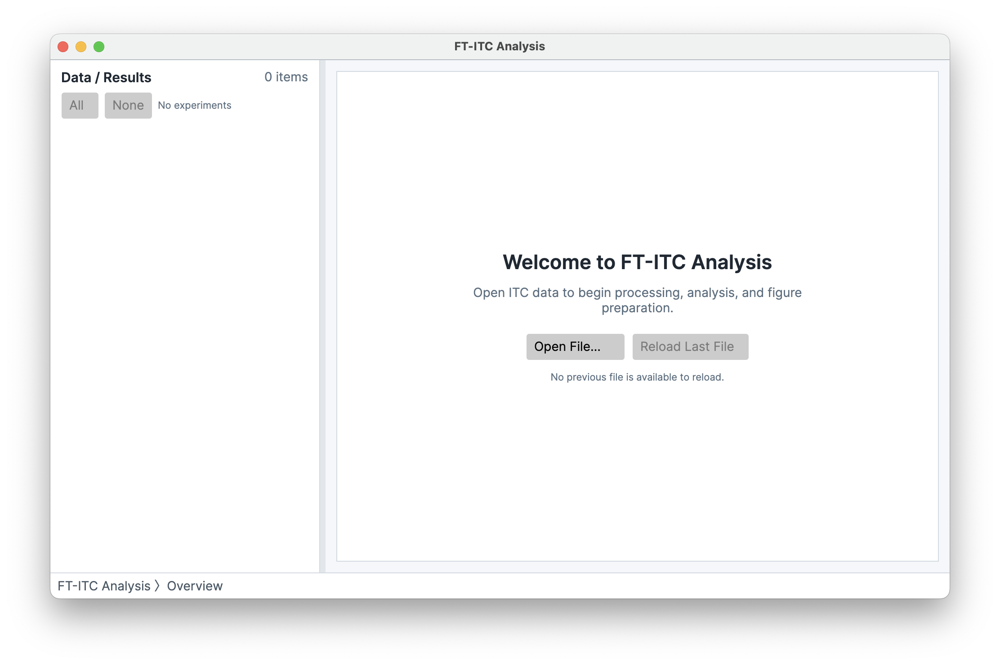
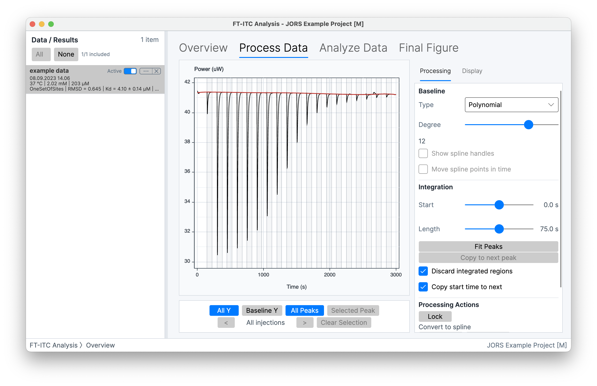
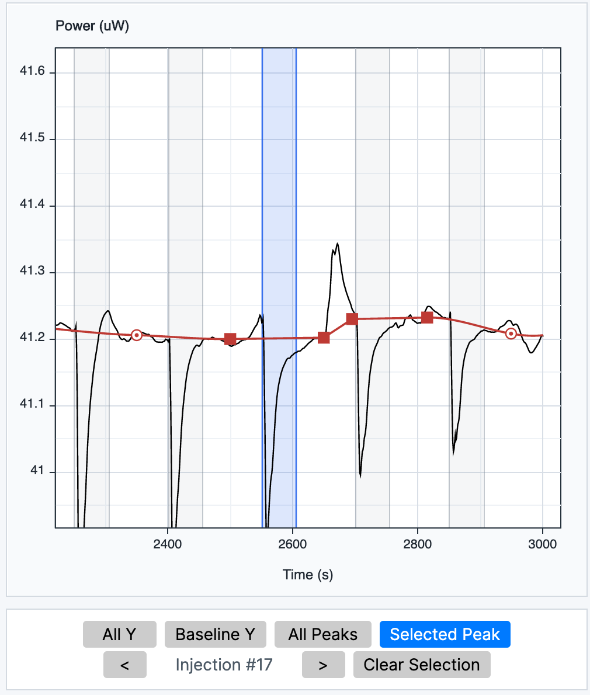
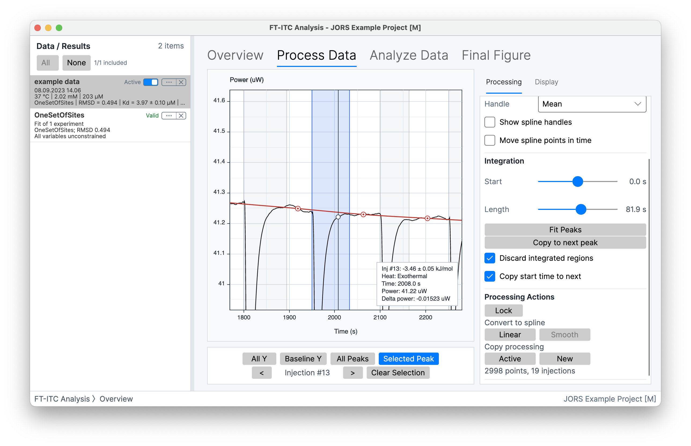
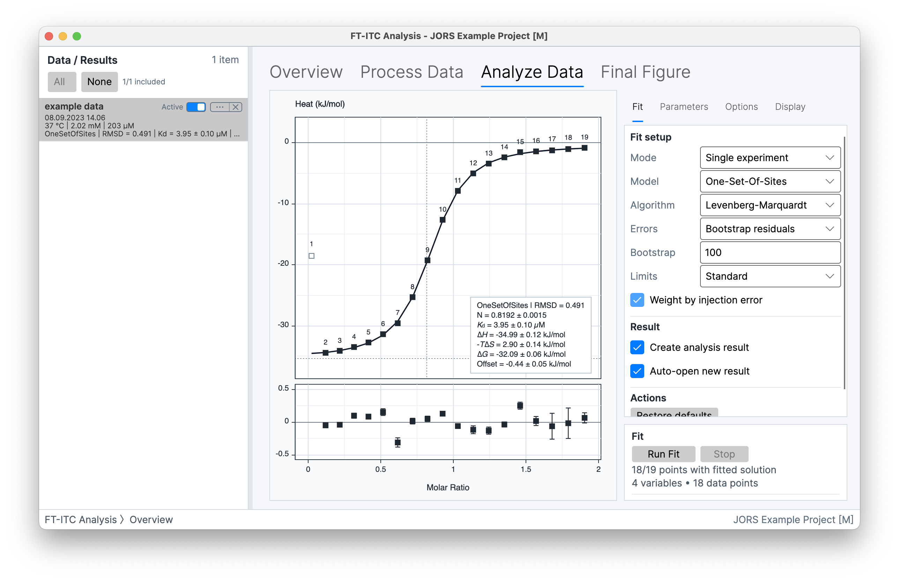
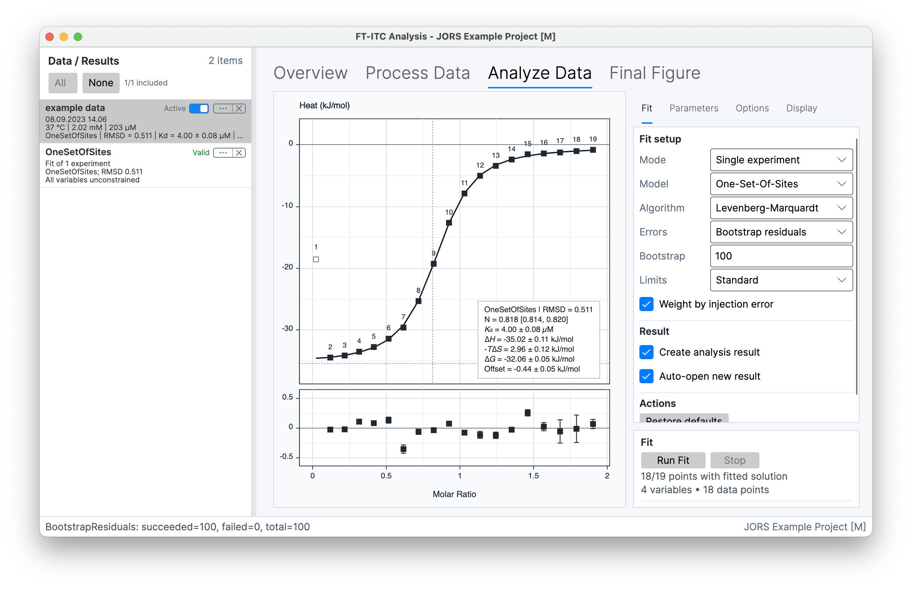
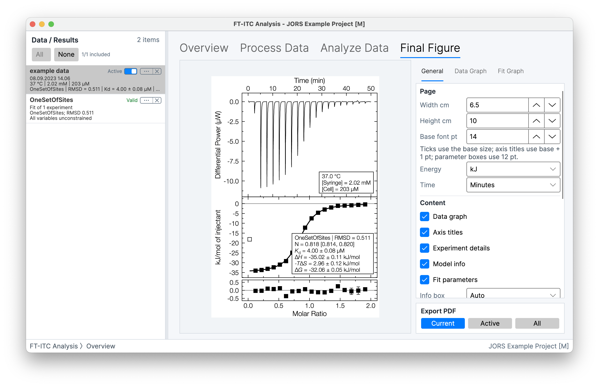

Open and check the experiment
Confirm the cell and syringe solutions, concentrations, temperature, injection settings, and imported comments.
ITC data analysis tutorial
A practical first pass through your own raw ITC experiment: inspect the differential-power trace, integrate the injection peaks, fit a binding model, then save and export the result.
Frederik Theisen · FT-ITC Analysis ·
The short version
Use the normal sequence for one raw experiment. Make a change, look at its effect, then move to the next step.
Confirm the cell and syringe solutions, concentrations, temperature, injection settings, and imported comments.
Choose a simple baseline representation, use baseline regions between injections to guide it, and compare the differential-power trace with the series of integrated heats.
Inspect early, middle, and late injections, then apply a consistent integration rule across the run.
Run a binding model that matches the experiment and inspect the fitted binding isotherm and residuals.
Save the project, then export a final figure that shows the processed result.
01 · Import and experiment context
Start by checking what you imported and the experiment details that go with it. The workflow moves from a raw differential-power trace, to integrated heats, to a fitted binding isotherm.
The thermogram is the differential-power trace recorded as a function of time. Each injection produces a peak whose sign and magnitude reflect the net heat of injection and the instrument sign convention.
Integrating the baseline-corrected differential-power response gives one heat for each injection. The integrated heats can contain the heat of binding as well as mixing, dilution, buffer mismatch, thermal equilibration, and other contributions.
The integrated heats form a binding isotherm. A selected binding model then estimates quantities such as Kd or Ka, stoichiometry, and enthalpy.
Check the cell and syringe identities, concentrations, temperature, buffer, injection volume, spacing, and imported comments. These values set the molar-ratio axis and are part of the fit.


02 · Baseline correction
Start with the simplest baseline representation that follows the baseline regions between injections and observed drift. Use Polynomial for smooth global drift, Spline to place editable points in baseline regions, or Segmented when the drift changes locally across the run.
With a Spline, move the automatic points or place your own in baseline regions between injections. Right-click a point to remove it or mark it linear; mark neighbouring points linear when you want a straight section between them.
After a larger change, review the integrated heats before moving on.

03 · Peak integration
Set one integration rule from the differential-power trace, then check that it still works across the experiment.
Use Start and Length to set integration boundaries that include the full response and end after the power signal has returned to the baseline, before the next injection.
Fit Peaks provides initial estimates for the integration end boundaries, and you can adjust any result afterwards. Use Copy to next peak when neighbouring injections need the same treatment; press Space to move through selected peaks.
When the integration regions are set, compare the full series of integrated heats with the thermogram before fitting.


04 · Fit the binding isotherm
Open Analyze Data in Single experiment mode once the integrated heats and experiment details are ready. Select a binding model from what is known about the molecular system and an initial evaluation of the binding isotherm. One-Set-Of-Sites is a useful first model when the system has one class of equivalent, independent sites.
Check the units, concentrations, and starting parameter values. Keep the Limits setting at Standard at first; if a fitted value reaches a bound, interpret it in relation to the data and model before choosing an expanded range. Then select Run Fit. The graph updates with the fitted binding isotherm, residuals, and parameter estimates.
For related experiments that belong to one series, continue with multiple-experiment fitting or Advanced analysis.
Read the documented model assumptions →05 · Review, save, and export
Look at the fitted binding isotherm and residuals together. If a particular injection or region departs from the fit, inspect that injection and the surrounding peaks in the differential-power trace, then compare the corresponding integrated heat. The integration region or baseline may need adjustment before you rerun the fit.

Save the project as .ftxtc once you have useful processing, then save it again after fitting. Use Final Figure to assemble the thermogram, fitted binding isotherm, and residuals, then select Export PDF.

Frequently asked questions
These answer the common choices in this workflow. Contact Support for software problems or help with a reproducible issue.
Raw .itc, .nitc, .ta, and .apj inputs begin in Process Data. Origin .opj files begin there when they contain a usable time/power trace, or with fitting when they contain integrated heats only. Compatible .dat, .aff, and .dh files also begin with experiment details and fitting. .ftxtc files reopen an FT-ITC project. See supported formats.
Start with the simplest baseline representation that follows the baseline regions between injections: Polynomial for smooth global drift, Spline for editable points in baseline regions, or Segmented when drift changes locally. Compare the differential-power trace and integrated heats after each change. See baseline models.
Use Start and Length to set integration boundaries that include the full injection response and end after the power signal returns to the baseline, before the next injection. Check more than one injection, then use Fit Peaks or Copy to next peak to speed up repeated work. See integration regions.
No. Most analyses do not need a buffer titration. Consider one primarily when dilution heat is non-constant; it can also provide a no-interaction control for weak, low-enthalpy binding. Use Linear as the default subtraction; if binding is not saturated at the end of the experiment, a buffer titration can also help constrain the injection-heat offset, but assess that correction carefully. See Buffer Subtraction.
Start with a binding model based on knowledge of the molecular system and evaluation of the binding isotherm. One-Set-Of-Sites is a useful first choice for one class of equivalent, independent sites; the manual describes the other available models and their inputs. See the model reference.
Inspect the affected injection and surrounding peaks in the differential-power trace, then compare the corresponding integrated heat. The integration region or baseline may need adjustment. Review the starting values, locked parameters, and Limits setting before rerunning the fit. If the same residual pattern occurs in replicate experiments, consider whether a different model is needed. See fitting parameters and diagnostics. If the application itself behaves unexpectedly, contact Support.
Further reading
Use the manual for detailed controls, then return to the experiment whenever you want to try a related processing or fitting option.